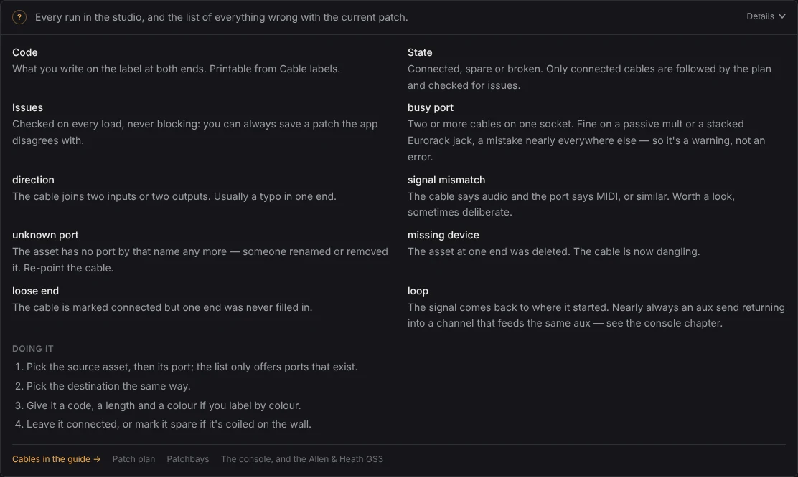
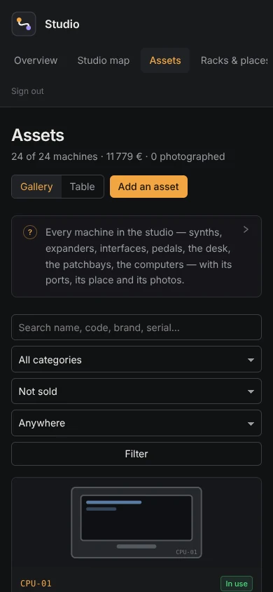

Studio manager
Every machine, every cable and every session in one private back-office — with the patchbays and the desk modelled properly, so the app can tell you where a signal actually goes.
Read the guide Set it up Source

What it does
Every machine, with its sockets
Synths, expanders, interfaces, pedals, the desk, the patchbays, the computers — with the code you write on the box, where it lives, what it cost, and its ports. A machine you haven't photographed yet is drawn from its category and its size, so a rack still reads at a glance.

The room, to scale
A floor plan in real centimetres: every rack, desk, stand and pedalboard where it actually stands, and the cable runs between them bundled into the one thing you trip over. Click a place and it opens alone, large, with every cable entering and leaving it named.

The patchbays, as boards
Two rows of jacks numbered like the front panel, the label of every point, and each column's mode — normal, half-normal or thru. Paste a row straight out of the old spreadsheet, and print the designation strips at your jacks' real spacing.

The desk, channel by channel
The Allen & Heath GS3 as its 24 strips: what's in each mic, line, tape and insert socket, what the channel is called, where it's routed, and which socket its signal actually leaves by. An aux that comes back into a channel feeding the same aux is caught before it howls.
The signal, followed
The whole studio as one diagram, ranked by how far a signal has travelled — sources on the left, monitors on the right. It follows a signal through normalled columns, through pedals, and through the desk's own routing, and stops where the hardware stops.

Sessions and clients
A week per room with clients, price and paid status. Double bookings are caught, and the whole calendar is subscribable as a feed, so the week is on your phone without opening anything.

Who changed what
Every create, change and delete is recorded as it happens, in the same transaction, so the trail can't drift from the data. Read it by person or by machine, compare any two versions field by field, and put one back. Deleted things come back under their own id.

Help where you are
Every page carries a panel whose first sentence is always on screen and whose detail is one click away. The same text, at length and with drawings, is the guide — in the app and on this site.

Quick start
Node.js 20.9+ and Docker. Five minutes, start to a studio you can click around.
git clone https://github.com/sudo-bngz/momo-studio.git studio-manager
cd studio-manager
cp .env.example .env.local
npm install
docker compose up -d # GoHead (API + admin) on :8080
npm run gohead:setup # content model, types, the studio-staff role
npm run gohead:seed # optional: a sample studio to click around
npm run dev # http://localhost:3000Run them one at a time — if npm install fails, everything after it fails too, for want of a
node_modules/. Sign in with admin / gohead-local-password, the defaults in
docker-compose.yml; change them before exposing anything. The sample studio holds a GS3 24/8/2, three
patchbays, a Eurorack case, pedals and 80 cables, so every page has something in it from the first click.
The setup page has the rest: your own studio, the environment, deploying, and what to do when
npm install fails behind a corporate proxy.
On a phone, in the live room
Every page works at phone width, which is where you are when you're actually looking at the back of a rack. The cable labels and the patchbay and scribble strips print to paper at real spacing.
